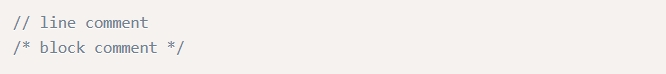

Comment
คอมเม้นต์เป็นส่วนของซอสโค้ดที่ไม่มีผลกับโปรแกรมของเรา มันทำให้โปรแกรมเมอร์สามารถอธิบายโปรแกรมของพวกเขา และเพื่อให้ตรวจสอบได้ง่ายในภายหลัง ในภาษา C++ มีสองทางที่คุณจะสามารถคอมเมนต์ได้
คอมเมนต์ประเภทแรกคือ การคอมเมนต์แบบบรรทัด มันถูกใช้สำหรับเพื่อคอมเมนต์ในหนึ่งบรรทัด และจะไม่สนใจโค้ดของโปรแกรมหลังจากเครื่องหมายดับเบิ้ลสแลซ // แบบที่สองคือบล็อคคอมเม้นต์ ซึ่งจะละเว้นทุกอย่างเริ่มจาก /* และสิ้นสุดที่ */ ซึ่งมันมักจะใช้กับการคอมเม้นต์ในหลายบรรทัด อย่างไรก็ตามมันยังสามารถที่จะใช้ในการคอมเมนต์เพียงหนึ่งบรรทัดได้ นี่เป็นตัวอย่างของการใช้งานคอมเมนต์ในภาษา C++